Week 1 - Asset Creation
I decided to dedicate this week to the creation of assets
This includes the following:
- Character Design and Creation
- Material and Texture Creation
- 3D Modelling
 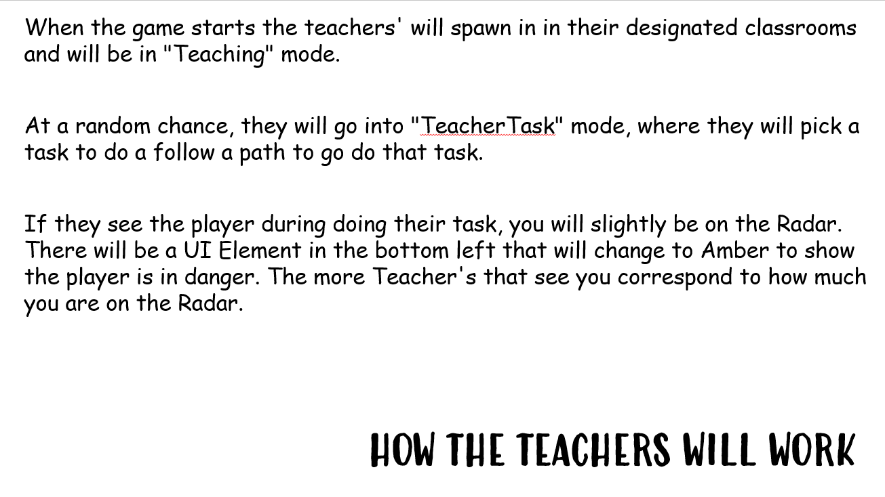
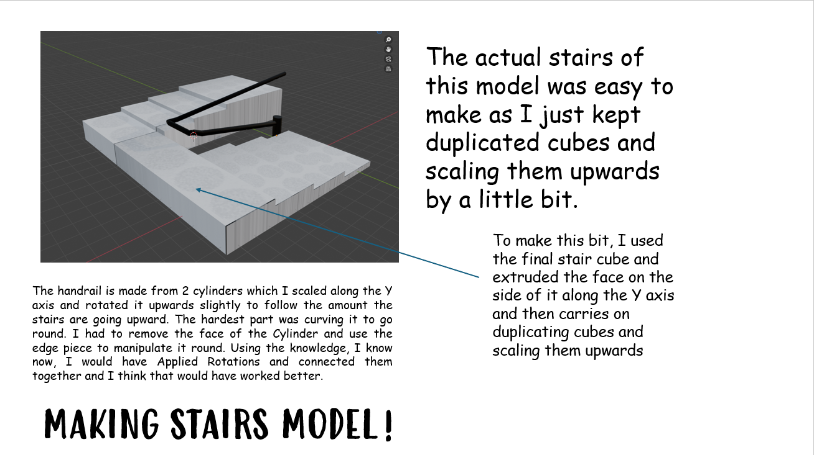
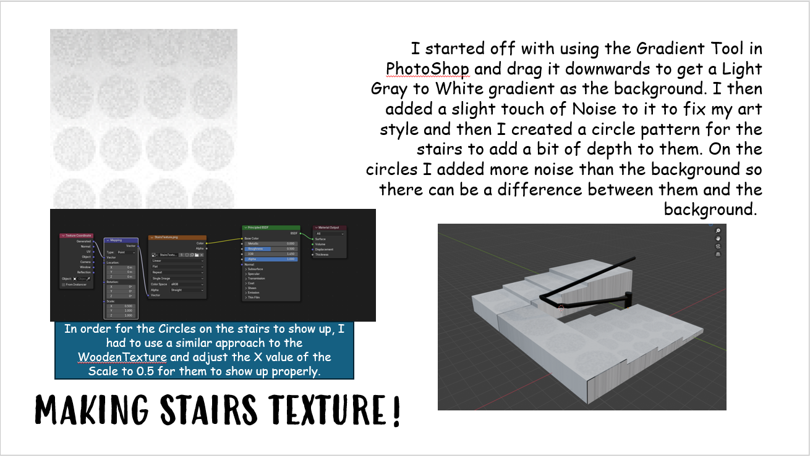
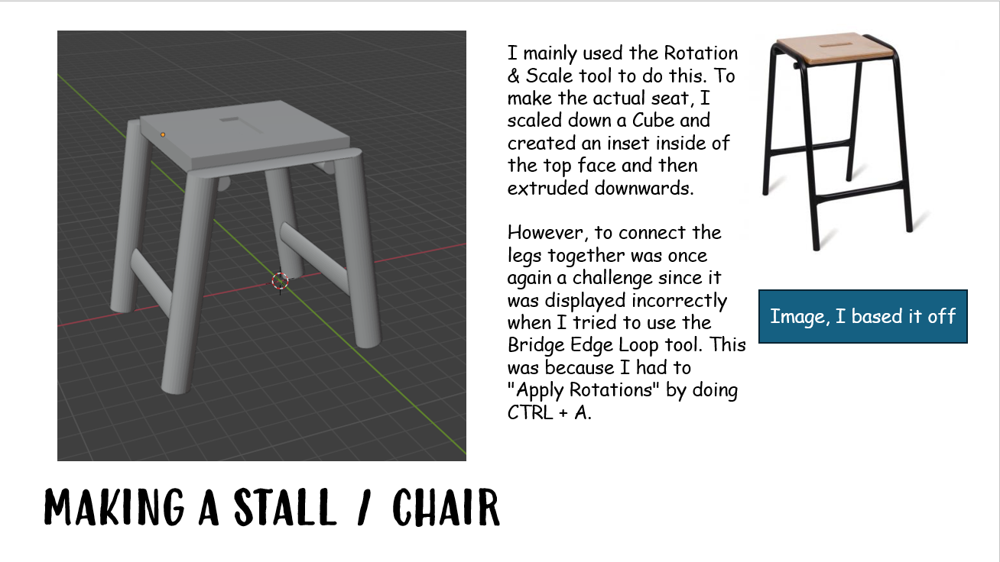
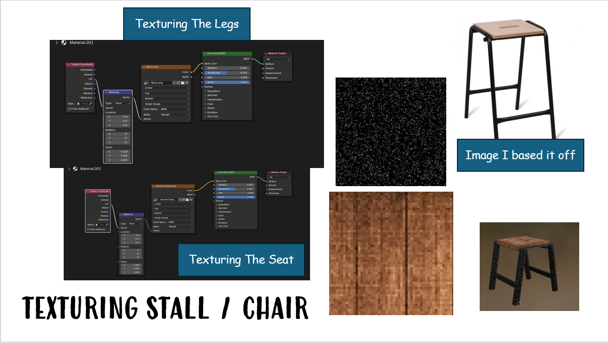
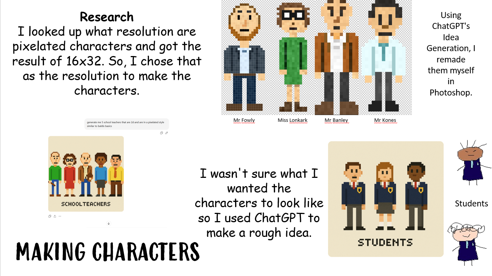
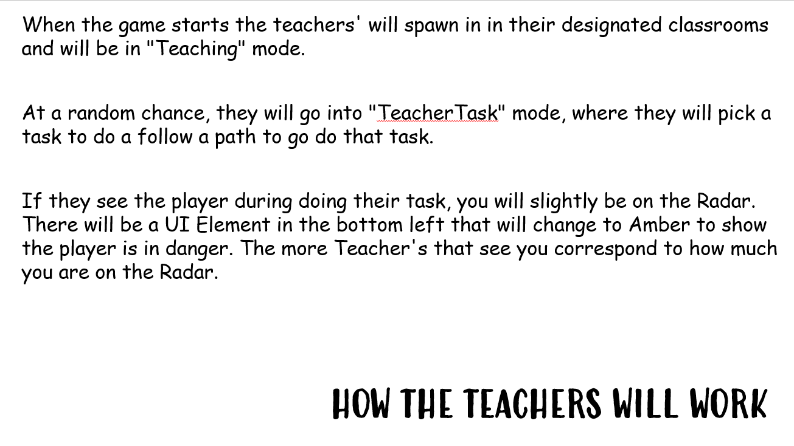
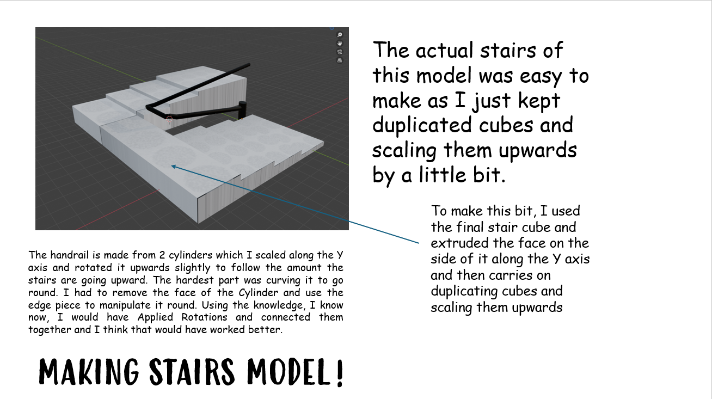
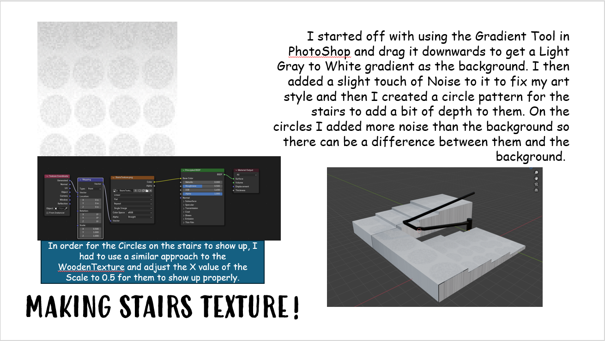
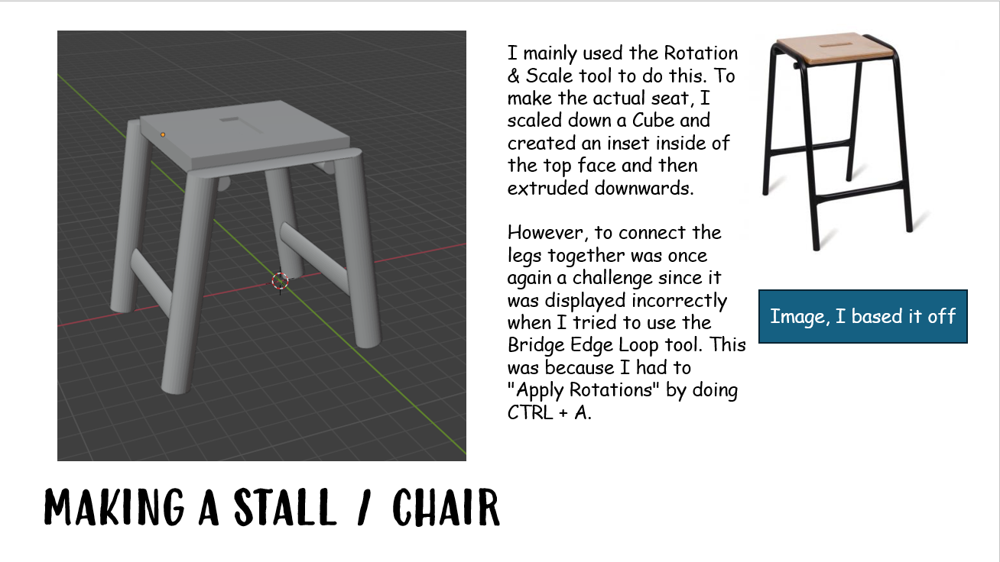
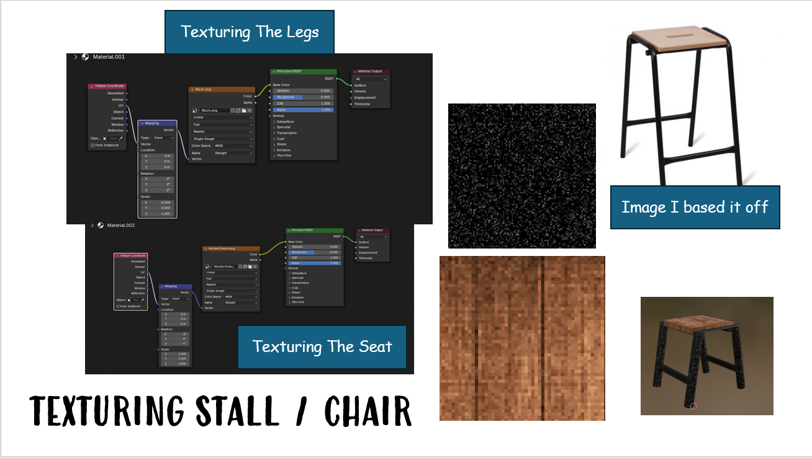
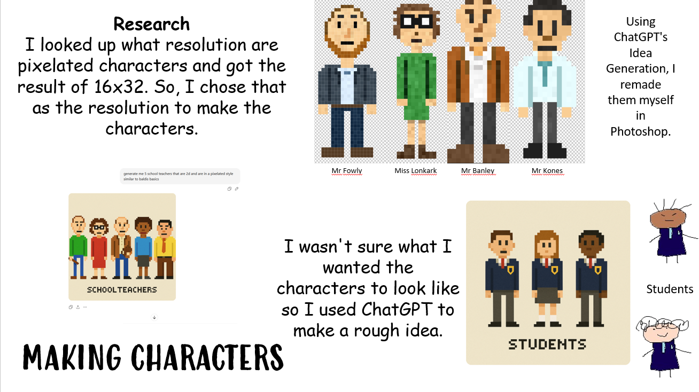
Week 2 - Level Design
I decided to dedicate this week to create a level map and make it inside of Unity
This includes the following:
- Level Design
- Creation of Level in Unity
- Texturing Level
Since I am making the end product of this to be based off Baldi's Basics, I looked at the public decompile of the game.
The main reason I did this was because it is made in Unity, the primary game engine I know. Therefore, the way the "school" is made will be easier to understand since I understand the way Unity works.
I also did this because I was struggling to think how I would build the level. I noticed that the walls are Planes and the Ceiling and Floor are made up off Quad GameObjects. The materials themselves uses a Shader called "Legacy/Diffuse."
It also helped me understand how I could make this art style since I thought it was low-quality images just upscales via Nearest Neighbor but it is just low-quality images. (64x64, 32x32, 128x128 etc)

On the first day this is what I accomplished.
 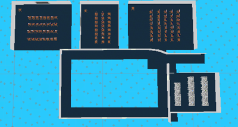
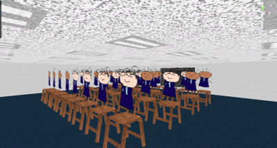
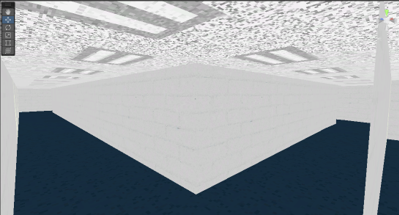
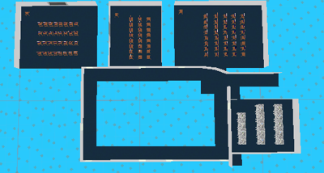
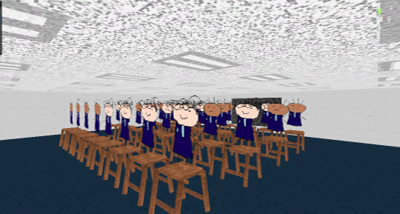
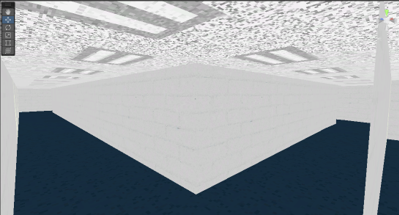
The first half of the first floor is almost done. All that is left is the rooms and interiors.
This is the textures that were used:
On the second day this is what I accomplished.
This is the textures that were used:
On the third and fourth day of the week, I spent this time to make the stairs part to connect the two floors I planned.
I finished the map, I think it turned out really well and follow the layout of the Design.
Materials are using Unity's Legacy Diffuse Shader which allows me to put Images on a material.
Week 3 - Programming in Unity
I decided to dedicate this week to programming in Unity. More specifically programming AI
The first thing I did was install Unity's NavMesh Package. This package handles AI Navigation.
The Colours on the ground show the NavMesh Surface component. It shows where the characters can walk.
This is how I made the NavMesh Surfaces, I made sure the floor objects are apart of the Floor Layer and then baked the Floor layer to generate the surfaces.
These are my configurations for each character